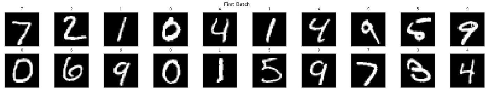
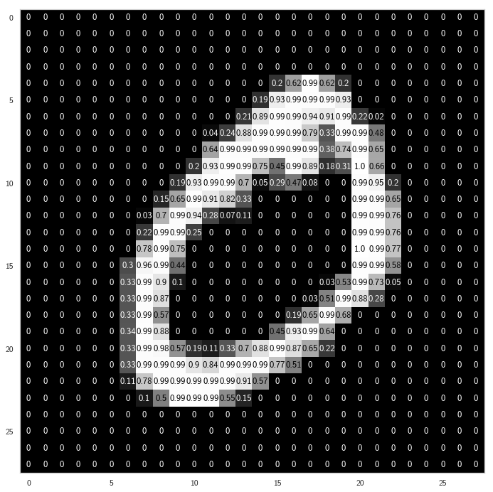
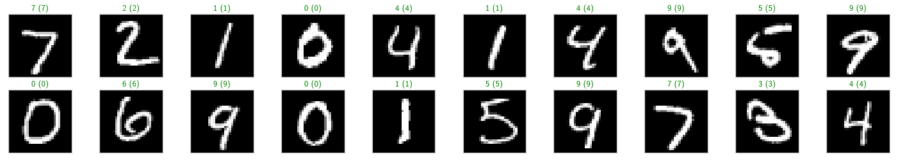

MNIST MLP
Table of Contents
Introduction
This is from Udacity's Deep Learning Repository which supports their Deep Learning Nanodegree.
We are going to train a Multi-Layer Perceptron to classify images from the MNIST database of hand-written digits.
We're going to do it using the following steps.
- Load and visualize the data
- Define a neural network
- Train the model
- Evaluate the performance of our trained model on a test dataset
Imports
From Python
from datetime import datetime
From PyPi
from dotenv import load_dotenv
from torchvision import datasets
import matplotlib.pyplot as pyplot
import seaborn
import torch.nn as nn
import torch.nn.functional as F
import torchvision.transforms as transforms
import torch
import numpy
This Project
from neurotic.tangles.data_paths import DataPathTwo
Setup the Plotting
get_ipython().run_line_magic('matplotlib', 'inline')
seaborn.set(style="whitegrid",
rc={"axes.grid": False,
"font.family": ["sans-serif"],
"font.sans-serif": ["Latin Modern Sans", "Lato"],
"figure.figsize": (8, 6)},
font_scale=3)
The Data
The Path To the Data
load_dotenv()
path = DataPathTwo(folder_key="MNIST")
print(path.folder)
print(path.folder.exists())
/home/hades/datasets/MNIST True
Some Settings
Since I downloaded the data earlier for some other exercise forking sub-processes is probably unnecessary, and for the training and testing we'll use a relatively small batch-size of 20.
WORKERS = 0
BATCH_SIZE = 20
A Transform
We're just going to convert the images to tensors.
transform = transforms.ToTensor()
Split Up the Training and Testing Data
train_data = datasets.MNIST(root=path.folder, train=True,
download=True, transform=transform)
test_data = datasets.MNIST(root=path.folder, train=False,
download=True, transform=transform)
Create the Batch Loaders
train_batches = torch.utils.data.DataLoader(train_data, batch_size=BATCH_SIZE,
num_workers=WORKERS)
test_batches = torch.utils.data.DataLoader(test_data, batch_size=BATCH_SIZE,
num_workers=WORKERS)
Visualize a Batch of Training Data
The first step in a classification task is to take a look at the data, make sure it is loaded in correctly, then make any initial observations about patterns in that data.
Grab a batch
images, labels = iter(train_batches).next()
images = images.numpy()
Now that we have a batch we're going to plot the images in the batch, along with the corresponding labels.
figure = pyplot.figure(figsize=(25, 4))
figure.suptitle("First Batch", weight="bold")
for index in numpy.arange(BATCH_SIZE):
ax = figure.add_subplot(2, BATCH_SIZE/2, index+1, xticks=[], yticks=[])
ax.imshow(numpy.squeeze(images[index]), cmap='gray')
# print out the correct label for each image
# .item() gets the value contained in a Tensor
ax.set_title(str(labels[index].item()))

View a Single Image
Now we're going to take a closer look at the second image in the batch.
image = numpy.squeeze(images[1])
figure = pyplot.figure(figsize = (12,12))
ax = figure.add_subplot(111)
ax.imshow(image, cmap='gray')
width, height = image.shape
threshold = image.max()/2.5
for x in range(width):
for y in range(height):
val = round(image[x][y],2) if image[x][y] !=0 else 0
ax.annotate(str(val), xy=(y,x),
horizontalalignment='center',
verticalalignment='center',
color='white' if image[x][y]<threshold else 'black')

We're looking at a single image with the normalized values for each pixel superimposed on it. It looks like black is 0 and white is 1, although for this image most of the 'white' pixels are just a little less than one.
Define the Network Architecture
The architecture will be responsible for seeing as input a 784-dim Tensor of pixel values for each image, and producing a Tensor of length 10 (our number of classes) that indicates the class scores for an input image. This particular example uses two hidden layers and dropout to avoid overfitting.
These values are based on the keras example implementation.
INPUT_NODES = 28 * 28
HIDDEN_NODES = 512
DROPOUT = 0.2
CLASSES = 10
class Net(nn.Module):
def __init__(self):
super().__init__()
self.fully_connected_layer_1 = nn.Linear(INPUT_NODES, HIDDEN_NODES)
self.fully_connected_layer_2 = nn.Linear(HIDDEN_NODES, HIDDEN_NODES)
self.output = nn.Linear(HIDDEN_NODES, CLASSES)
self.dropout = nn.Dropout(p=DROPOUT)
return
def forward(self, x):
# flatten image input
x = x.view(-1, 28 * 28)
# add hidden layer, with relu activation function
x = self.dropout(F.relu(self.fully_connected_layer_1(x)))
x = self.dropout(F.relu(self.fully_connected_layer_2(x)))
return self.output(x)
Initialize the NN
model = Net()
print(model)
Net( (fully_connected_layer_1): Linear(in_features=784, out_features=512, bias=True) (fully_connected_layer_2): Linear(in_features=512, out_features=512, bias=True) (output): Linear(in_features=512, out_features=10, bias=True) (dropout): Dropout(p=0.2) )
A Little CUDA
device = torch.device("cuda" if torch.cuda.is_available() else "cpu")
model.to(device)
Specify the Loss Function and Optimizer
It's recommended that you use cross-entropy loss for classification. If you look at the documentation you can see that PyTorch's cross entropy function applies a softmax function to the output layer and then calculates the log loss (so you don't want to do softmax as part of the model output).
criterion = nn.CrossEntropyLoss()
optimizer = torch.optim.SGD(model.parameters(), lr=0.01)
Train the Network
The steps for training/learning from a batch of data are:
- Clear the gradients of all optimized variables
- Forward pass: compute predicted outputs by passing inputs to the model
- Calculate the loss
- Backward pass: compute gradient of the loss with respect to model parameters
- Perform a single optimization step (parameter update)
- Update average training loss
The following loop trains for 30 epochs; feel free to change this number. For now, we suggest somewhere between 20-50 epochs. As you train, take a look at how the values for the training loss decrease over time. We want it to decrease while also avoiding overfitting the training data.
EPOCHS = 30
start = datetime.now()
model.train() # prep model for training
for epoch in range(EPOCHS):
# monitor training loss
train_loss = 0.0
train_losses = []
# train the model
for data, target in train_batches:
# move it to the GPU or CPU
data, target = data.to(device), target.to(device)
# clear the gradients of all optimized variables
optimizer.zero_grad()
# forward pass: compute predicted outputs by passing inputs to the model
output = model(data)
# calculate the loss
loss = criterion(output, target)
# backward pass: compute gradient of the loss with respect to model parameters
loss.backward()
# perform a single optimization step (parameter update)
optimizer.step()
# update running training loss
train_loss += loss.item() * data.size(0)
# print training statistics
# calculate average loss over an epoch
train_loss = train_loss/len(train_batches.dataset)
train_losses.append(train_loss)
print('Epoch: {} \tTraining Loss: {:.6f}'.format(
epoch+1,
train_loss
))
print("Training Time: {}".format(datetime.now() - start))
Epoch: 1 Training Loss: 0.826836 Epoch: 2 Training Loss: 0.324859 Epoch: 3 Training Loss: 0.251608 Epoch: 4 Training Loss: 0.202294 Epoch: 5 Training Loss: 0.170231 Epoch: 6 Training Loss: 0.146775 Epoch: 7 Training Loss: 0.127352 Epoch: 8 Training Loss: 0.115026 Epoch: 9 Training Loss: 0.104332 Epoch: 10 Training Loss: 0.093575 Epoch: 11 Training Loss: 0.084913 Epoch: 12 Training Loss: 0.077826 Epoch: 13 Training Loss: 0.071506 Epoch: 14 Training Loss: 0.067273 Epoch: 15 Training Loss: 0.063749 Epoch: 16 Training Loss: 0.058150 Epoch: 17 Training Loss: 0.054770 Epoch: 18 Training Loss: 0.051584 Epoch: 19 Training Loss: 0.047762 Epoch: 20 Training Loss: 0.045219 Epoch: 21 Training Loss: 0.041732 Epoch: 22 Training Loss: 0.040526 Epoch: 23 Training Loss: 0.038247 Epoch: 24 Training Loss: 0.035713 Epoch: 25 Training Loss: 0.033801 Epoch: 26 Training Loss: 0.031963 Epoch: 27 Training Loss: 0.031082 Epoch: 28 Training Loss: 0.028971 Epoch: 29 Training Loss: 0.027500 Epoch: 30 Training Loss: 0.026876 Training Time: 0:05:59.808071
Test the Trained Network
Finally, we test our best model on previously unseen test data and evaluate it's performance. Testing on unseen data is a good way to check that our model generalizes well. It may also be useful to be granular in this analysis and take a look at how this model performs on each class as well as looking at its overall loss and accuracy.
model.eval()
model.eval() will set all the layers in your model to evaluation mode. This affects layers like dropout layers that turn "off" nodes during training with some probability, but should allow every node to be "on" for evaluation!
Set Up the Testing
test_loss = 0.0
class_correct = list(0. for i in range(10))
class_total = list(0. for i in range(10))
model.eval()
start = datetime.now()
for data, target in test_batches:
data, target = data.to(device), target.to(device)
# forward pass: compute predicted outputs by passing inputs to the model
output = model(data)
# calculate the loss
loss = criterion(output, target)
# update test loss
test_loss += loss.item() * data.size(0)
# convert output probabilities to predicted class
_, prediction = torch.max(output, 1)
# compare predictions to true label
correct = numpy.squeeze(prediction.eq(target.data.view_as(prediction)))
# calculate test accuracy for each object class
for i in range(BATCH_SIZE):
label = target.data[i]
class_correct[label] += correct[i].item()
class_total[label] += 1
print("Test Time: {}".format(datetime.now() - start))
Test Time: 0:00:01.860151
Calculate and Print Average Test Loss
test_loss = test_loss/len(test_batches.dataset)
print('Test Loss: {:.6f}\n'.format(test_loss))
for i in range(10):
if class_total[i] > 0:
print('Test Accuracy of Batch {}: {:.2f} ({}/{})'.format(
str(i), 100 * class_correct[i] / class_total[i],
numpy.sum(class_correct[i]), numpy.sum(class_total[i])))
else:
print('Test Accuracy of {}: N/A (no training examples)'.format(classes[i]))
print('\nTest Accuracy (Overall): %2d%% (%2d/%2d)' % (
100. * numpy.sum(class_correct) / numpy.sum(class_total),
numpy.sum(class_correct), numpy.sum(class_total)))
Test Loss: 0.056054 Test Accuracy of Batch 0: 99.18 (972.0/980.0) Test Accuracy of Batch 1: 99.21 (1126.0/1135.0) Test Accuracy of Batch 2: 98.16 (1013.0/1032.0) Test Accuracy of Batch 3: 98.02 (990.0/1010.0) Test Accuracy of Batch 4: 98.47 (967.0/982.0) Test Accuracy of Batch 5: 98.43 (878.0/892.0) Test Accuracy of Batch 6: 98.12 (940.0/958.0) Test Accuracy of Batch 7: 97.47 (1002.0/1028.0) Test Accuracy of Batch 8: 97.13 (946.0/974.0) Test Accuracy of Batch 9: 98.12 (990.0/1009.0) Test Accuracy (Overall): 98% (9824/10000)
Visualize Sample Test Results
This cell displays test images and their labels in this format: predicted (ground-truth). The text will be green for accurately classified examples and red for incorrect predictions.
Obtain One Batch of Test Images
model.cpu()
dataiter = iter(test_batches)
images, labels = dataiter.next()
# get sample outputs
output = model(images)
# convert output probabilities to predicted class
_, preds = torch.max(output, 1)
# prep images for display
images = images.numpy()
# plot the images in the batch, along with predicted and true labels
fig = pyplot.figure(figsize=(25, 4))
for idx in numpy.arange(20):
ax = fig.add_subplot(2, 20/2, idx+1, xticks=[], yticks=[])
ax.imshow(numpy.squeeze(images[idx]), cmap='gray')
ax.set_title("{} ({})".format(str(preds[idx].item()), str(labels[idx].item())),
color=("green" if preds[idx]==labels[idx] else "red"))

This model is surprisingly accurate. I say surprising, even though we created a very accurate model previously, because in my original implementation I used RMSprop as the optimizer, because that's what the Keras implementation used, but then I only got 11%. I'm guessing that there's some extra tuning you need to do to the parameters for RMSprop but I just naively used the defaults. In any case, it semms that SGD is still the champ.